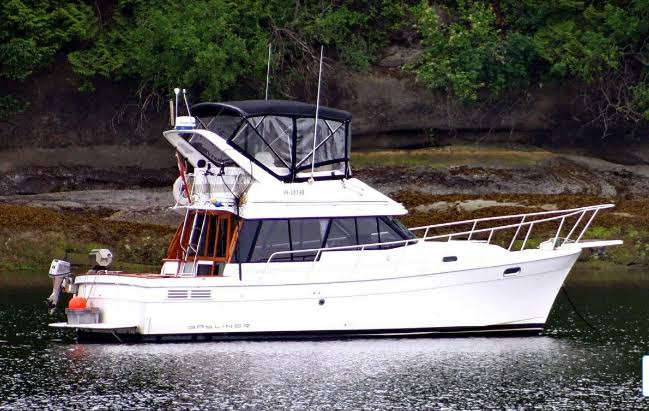

B-Scout Boat Guide · BAYL-3288-MO
Bayliner 3270 / 3288 Motor Yacht Explorer / Motor Yacht
1981–1995
Bayliner's all-time best-selling compact flybridge cruiser family: introduced as the 3270 Explorer in 1981, renamed 3270 Motor Yacht in 1985 and evolved into the 3288 Motor Yacht in 1989 without materially changing its celebrated mid-cabin, lower-helm layout.

- Length
- 32.08 ft
- Beam
- 11.5 ft
- Draft
- 2.92 ft
- Hull behaviour
- Semi-Displacement
- Fuel
- Diesel
- Propulsion
- Shaft
- Engine configuration
- Twin Inboard
- Boat family
- Motor Yacht
- Construction
- Fiberglass
Best for
- Couples or small families wanting a compact twin-diesel cruiser
- Inland and protected coastal cruising
- Buyers valuing accommodation density and dual helms
Trade-offs
- Engine access remains tight
- Two engines increase maintenance load
- Interior finish and noise isolation are value-oriented
- Individual engine packages materially affect speed, economy and serviceability
Known concerns
- No model-specific concern has been promoted to B-Scout’s evidence threshold. This does not mean the model has no age-, condition- or hull-specific risks.
Inspection focus
- Both engines, transmissions, shafts and cooling systems
- Window and deck moisture
- Fuel tanks and plumbing
- Electrical and sanitation systems
Continue researching
Related boat models
Bayliner 3388 Motor Yacht Flybridge Motor Yacht
32.92 ft · Semi-Displacement
Bayliner 3870 / 3888 Motor Yacht Mid-Cabin Flybridge Motor Yacht
38.17 ft · Semi-Displacement
Bayliner 3055 Ciera Sunbridge / 305 SB Express Cruiser
31.5 ft · Planing
Bayliner 3218 Motoryacht Flybridge Motor Yacht
32.67 ft · Semi-Displacement
Bayliner 3258 Command Bridge Command Bridge Cruiser
32.92 ft · Planing
Bayliner 3058 Command Bridge Command Bridge Cruiser
31 ft · Planing
About this record
B-Scout preserves uncertainty: missing information remains unknown rather than being treated as a negative. Specifications and guidance describe the model record; individual boats can differ by year, equipment, refit and condition.